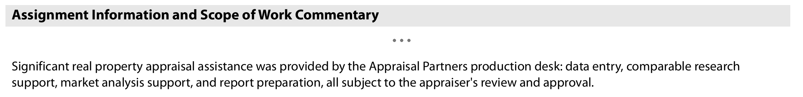

Fewer nights at the desk
Research, exhibits, report writing, and file organization move to my desk under the scope we agreed. You return to an editable draft rather than a blank report.
The Production Desk is for experienced residential appraisers who want a defined second set of hands for UAD 3.6 research, report writing, exhibits, and file organization.
You send the order, photos, sketch, and notes through an agreed secure channel. I prepare an editable draft and supporting file. You review every part of the work, make the final appraisal decisions, sign, and deliver.
Beginning November 2, 2026, new appraisal reports submitted to UCDP must use UAD 3.6. I am producing reports in the new format in my own practice now. If the desk is a fit for yours, we agree on scope and delivery time before I accept the file.
The sample is a sanitized file from my own practice, with the assistance disclosure included to show where my production work is identified. It is not a customer assignment.
You work directly with me. I prepare and personally review each desk file. No outside human subcontractor receives the assignment, and I accept only the volume I can check myself. The Production Desk has its own scope, onboarding, written terms, and client relationships, separate from my residential appraisal practice.
Where this helps
Research, exhibits, report writing, and file organization move to my desk under the scope we agreed. You return to an editable draft rather than a blank report.
I organize the source material with the draft so you can follow the work, test it, and retain what belongs in your workfile.
Assumptions, conflicts, missing items, and decisions that still need your attention are called out instead of buried in the report.
You get agreed report-production help without recruiting, training, payroll, or turning your practice into a management job.
This is contract report-production assistance; I do not join your staff or sign your report. AMC and lender programs use their own vendor approval and written agreement. If a program permits named significant appraisal assistance, we can discuss an arrangement for participating signing appraisers.
The responsibility line
A narrower draft-from-your-research scope can also be arranged when your office already has the comps, adjustments, and market data assembled.
How a file moves
The deliverable: an editable working file in the agreed software format, applicable PDF and UAD output, organized supporting materials, and a short record of assumptions or unresolved items that deserve attention during review. I fill the report as completely as the evidence allows and flag anything you need to verify or decide.
Who this can help
Not a fit: anonymous ghostwriting, shared credentials, co-signing, or any report the signing appraiser will not independently review.
Not sure? Read the three appraisers and see which one is having your week.
Markets and current boundaries
Market setup is deliberate. Client permission, licensing, market competence, and authorized MLS and data access are confirmed before production begins; a new market may take one to three weeks to establish.
Why I am offering this
I have spent twenty years in residential appraisal. The part I have always liked most is the desk work: research, analysis, report writing, and checking the file before it goes out. I am looking for stable working relationships where the division of work is clear and the signing appraiser stays in control. UAD 3.6 makes that help useful now, but it is not a reason to cut corners or hide who did what. I keep the roster and delivery commitments at a level I can personally review.
Disclosure, data, and trust
The certification identifies me and describes the assistance provided. When the work is significant real property appraisal assistance, that disclosure is not optional, and I do not remove it. Client, jurisdiction, and licensing requirements are confirmed before an assignment is accepted.

Files move through a secure channel we agree on during onboarding. I don't farm your files out to anybody. No client is solicited, no MLS login is shared, and assignment data is never sold.
I use software automation and AI-assisted tools to organize research, draft from source material, and check for missed or inconsistent items. I direct and personally review the production file; the signing appraiser independently reviews every appraisal judgment. Before live work begins, I identify the software and service providers expected to handle assignment data, along with their available storage, retention, and data-use terms, so you and your client can approve the setup.
Start with a plain note.
Tell me your markets, typical assignment mix, current software or workflow, and the part of production you want handled. I will reply directly and tell you whether the client terms, licensing, data access, and working style fit. Live work starts only after scope, timing, and written terms are agreed.